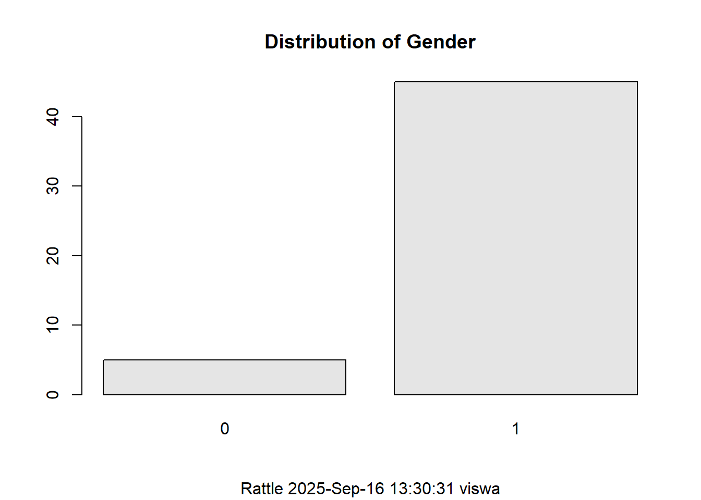
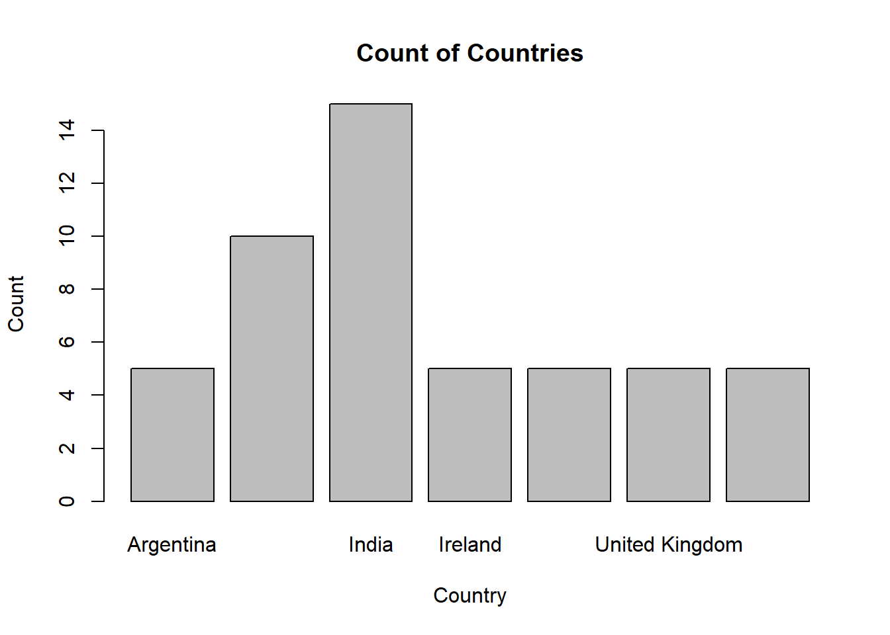
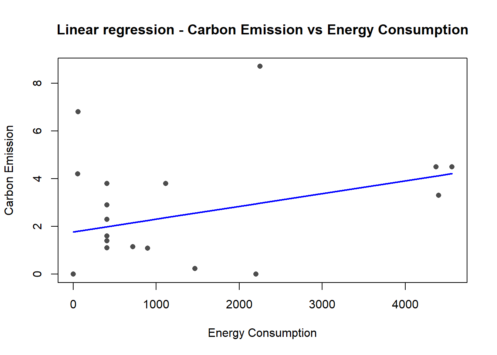
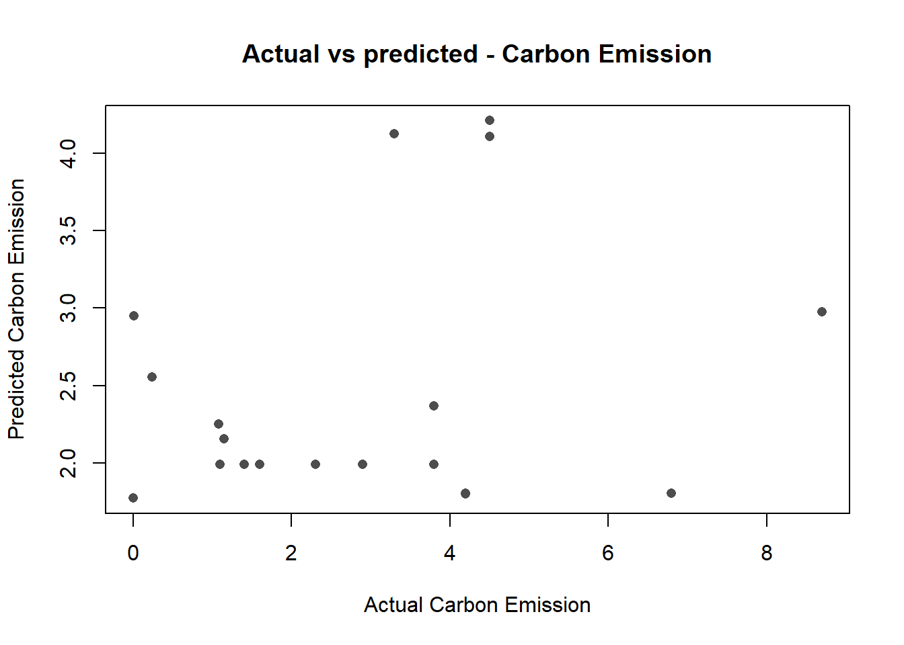
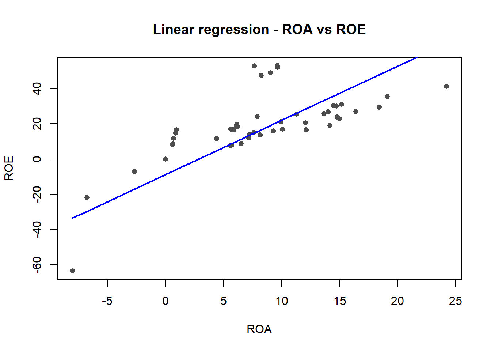
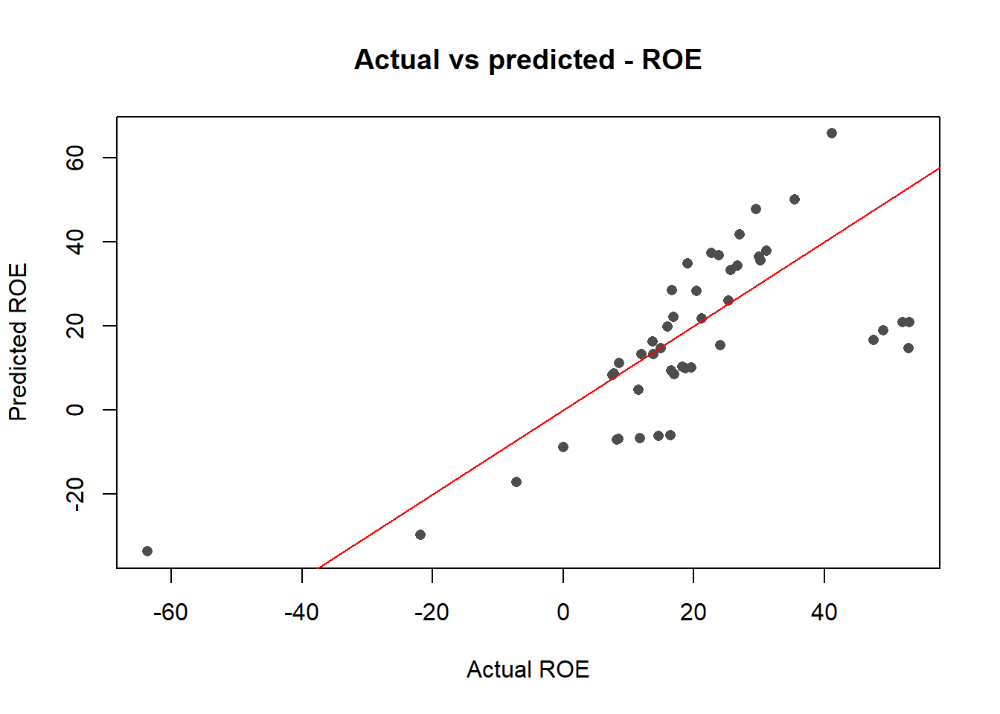
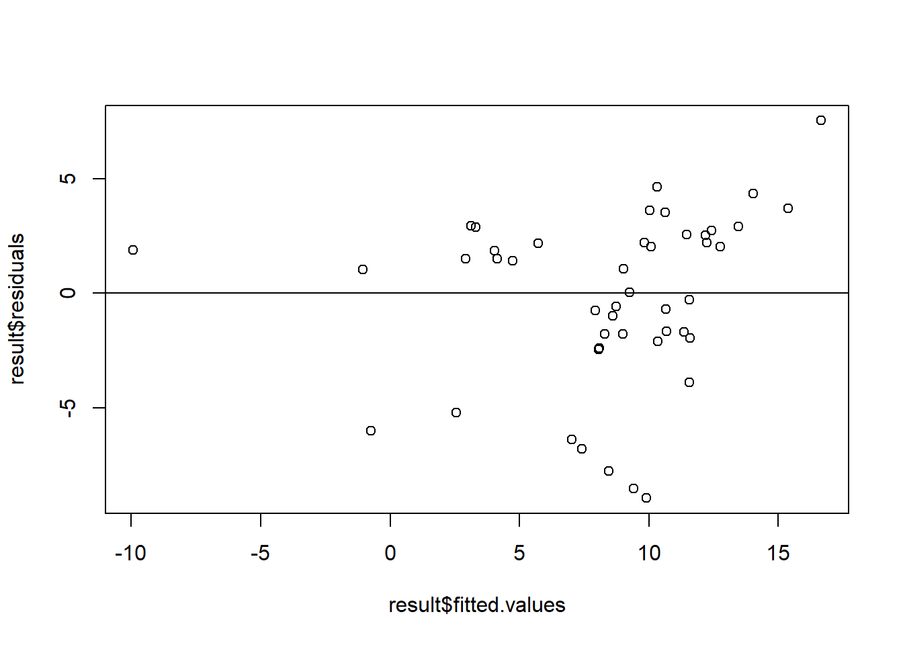
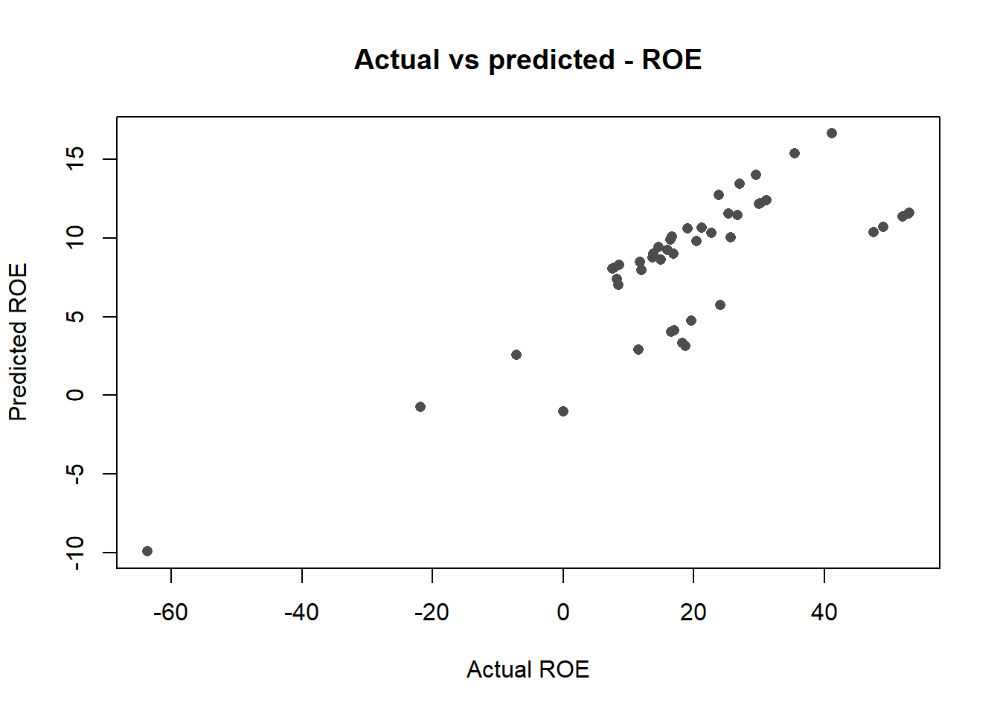
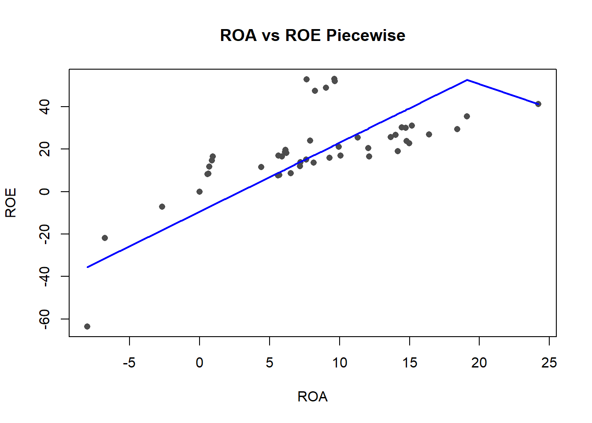

# A tibble: 6 × 11
Company Year Carbon_Emission Energy_Consumption ETOR ROA ROE Industry
<chr> <dbl> <dbl> <dbl> <lgl> <dbl> <dbl> <chr>
1 Allianz SE 2020 3.8 406. NA 0.64 8.42 Insuran…
2 Allianz SE 2021 2.9 406. NA 0.58 8.27 Insuran…
3 Allianz SE 2022 2.3 406. NA 0.69 11.8 Insuran…
4 Allianz SE 2023 1.6 406. NA 0.87 14.7 Insuran…
5 Allianz SE 2024 1.4 406. NA 0.95 16.5 Insuran…
6 AstraZene… 2020 0.24 1467. NA 12.0 20.4 Pharmac…
# ℹ 3 more variables: Location <chr>, CEO_Name <chr>, CEO_Gender <chr>Regression analysis on ten companies
Introduction
This study is taken up in order to understand the regression analysis on ten companies, and understand the different relations between the attributes and the impact on the dependent variable.
The following companies are chosen :
Allianz SE (Insurance)
AstraZeneca (Pharmaceuticals)
Accenture (IT Services)
Campus Shoes (Sporting goods)
Raymond (Clothing)
Patagonia (Gold)
Saudi Aramco (Fossil fuels)
Pepsico (Beverages)
Deutsche Bank (Banking & financials)
Hatsun (Dairy cooperatives)
Loading the dataset
The dataset has 50 records carefully collected and has the following properties :
Company Name
Year
Carbon Emissions
Energy Consumption
Employee turnover rate
Return on Assets
Return on Equity
Location
Name of CEO
Type of Industry
Gender of CEO
Data Pre-Processing
Since each company is from different industries, data cleaning methodology is different for different companies. The following measures were taken for quantitative :
Row deletion was not taken into consideration
For companies that have only one value present:
- Values were duplicated for all 5 years
For companies with more than one, but some values missing:
- The missing values were replaced using forward fill , by taking the nearest value into account for carbon emission values, and energy consumption. As the values usually don’t have major differences
Data Exploration
Summary of data
Company Year Carbon_Emission Energy_Consumption
Length:50 Min. :2020 Min. :0.000 Min. : 0
Class :character 1st Qu.:2021 1st Qu.:0.240 1st Qu.: 405
Mode :character Median :2022 Median :1.275 Median :1005
Mean :2022 Mean :2.581 Mean :1511
3rd Qu.:2023 3rd Qu.:4.100 3rd Qu.:2238
Max. :2024 Max. :8.700 Max. :4561
ETOR ROA ROE Industry
Mode:logical Min. :-8.030 Min. :-63.650 Length:50
NA's:50 1st Qu.: 1.817 1st Qu.: 9.335 Class :character
Median : 7.640 Median : 16.930 Mode :character
Mean : 6.949 Mean : 12.605
3rd Qu.:12.100 3rd Qu.: 26.483
Max. :24.200 Max. : 53.000
Location CEO_Name CEO_Gender
Length:50 Length:50 Length:50
Class :character Class :character Class :character
Mode :character Mode :character Mode :character
From this, we can infer that:
Average carbon emission for the selected companies is 8.3 MtCO2
Average energy consumption is 4372 for these companies
Average Return on assets is 11%
Average Return on Equity is 18%
Exploratory Data Analysis

countries
Argentina Germany India Ireland Saudi Arabia
5 10 15 5 5
United Kingdom USA
5 5 
Summary of relevant qualitative data
90% of CEOs are males
Most of the companies are from India
Regression Analysis
For the dataset, we are going to use the following methods:
Linear Regresion
Multiple Regression
Piece-wise regression
Linear regression
Carbon Emission vs Energy consumption
Call:
lm(formula = Carbon_Emission ~ Energy_Consumption, data = data)
Residuals:
Min 1Q Median 3Q Max
-2.9401 -1.7732 -0.8574 1.3018 5.7241
Coefficients:
Estimate Std. Error t value Pr(>|t|)
(Intercept) 1.7732005 0.5202264 3.409 0.00133 **
Energy_Consumption 0.0005345 0.0002452 2.180 0.03421 *
---
Signif. codes: 0 '***' 0.001 '**' 0.01 '*' 0.05 '.' 0.1 ' ' 1
Residual standard error: 2.581 on 48 degrees of freedom
Multiple R-squared: 0.09008, Adjusted R-squared: 0.07112
F-statistic: 4.752 on 1 and 48 DF, p-value: 0.03421The model suggests that Energy_Consumption is a statistically significant predictor of the dependent variable (p = 0.034). However, the effect size is very small (0.0005345 per unit) and the model only explains about 9% of the variance, so while there is a statistically detectable effect, the practical explanatory power is weak.


ROA vs ROE
Call:
lm(formula = ROE ~ ROA, data = data)
Residuals:
Min 1Q Median 3Q Max
-30.073 -10.893 -0.949 8.796 38.123
Coefficients:
Estimate Std. Error t value Pr(>|t|)
(Intercept) -8.8197 3.3591 -2.626 0.0116 *
ROA 3.0831 0.3258 9.463 1.49e-12 ***
---
Signif. codes: 0 '***' 0.001 '**' 0.01 '*' 0.05 '.' 0.1 ' ' 1
Residual standard error: 17.55 on 48 degrees of freedom
Multiple R-squared: 0.651, Adjusted R-squared: 0.6438
F-statistic: 89.55 on 1 and 48 DF, p-value: 1.494e-12The model suggests that ROA is a highly statistically significant predictor of the dependent variable (p almost 0). The effect size is big, as when the ROA is 3%, the ROE is 8% and the model explains about 65% of the variance.


Carbon Emission vs ROA
Call:
lm(formula = Carbon_Emission ~ ROA, data = data)
Residuals:
Min 1Q Median 3Q Max
-2.633 -2.326 -1.310 1.534 6.123
Coefficients:
Estimate Std. Error t value Pr(>|t|)
(Intercept) 2.609490 0.518020 5.037 7.1e-06 ***
ROA -0.004085 0.050242 -0.081 0.936
---
Signif. codes: 0 '***' 0.001 '**' 0.01 '*' 0.05 '.' 0.1 ' ' 1
Residual standard error: 2.706 on 48 degrees of freedom
Multiple R-squared: 0.0001377, Adjusted R-squared: -0.02069
F-statistic: 0.006612 on 1 and 48 DF, p-value: 0.9355The model suggests that ROA is not a statistically significant predictor of the dependent variable (p = 0.93). The effect is also not significant and the model explains only 0.6% of variance.
Energy Consumption vs ROA
Call:
lm(formula = Energy_Consumption ~ ROA, data = data)
Residuals:
Min 1Q Median 3Q Max
-1482.2 -1011.6 -514.3 549.3 3049.3
Coefficients:
Estimate Std. Error t value Pr(>|t|)
(Intercept) 1922.08 277.27 6.932 9.35e-09 ***
ROA -59.09 26.89 -2.197 0.0329 *
---
Signif. codes: 0 '***' 0.001 '**' 0.01 '*' 0.05 '.' 0.1 ' ' 1
Residual standard error: 1448 on 48 degrees of freedom
Multiple R-squared: 0.0914, Adjusted R-squared: 0.07247
F-statistic: 4.828 on 1 and 48 DF, p-value: 0.03285The model suggests that ROA is a statistically significant predictor of the dependent variable (p = 0.03). The effect is not significant and the model explains only 9% of variance.
Multiple Regression
ROA as a resultant of ROE, Carbon Emission and Energy Consumption
Call:
lm(formula = ROA ~ ROE + Carbon_Emission + Energy_Consumption,
data = data)
Residuals:
Min 1Q Median 3Q Max
-8.959 -1.789 1.462 2.216 7.553
Coefficients:
Estimate Std. Error t value Pr(>|t|)
(Intercept) 7.4247618 0.8535992 8.698 2.83e-11 ***
ROE 0.2238477 0.0190020 11.780 1.73e-15 ***
Carbon_Emission -0.4497897 0.2185902 -2.058 0.04531 *
Energy_Consumption -0.0014135 0.0003754 -3.766 0.00047 ***
---
Signif. codes: 0 '***' 0.001 '**' 0.01 '*' 0.05 '.' 0.1 ' ' 1
Residual standard error: 3.763 on 46 degrees of freedom
Multiple R-squared: 0.7755, Adjusted R-squared: 0.7609
F-statistic: 52.97 on 3 and 46 DF, p-value: 5.826e-15The model suggests that ROA is a statistically significant predictor of the dependent variable (p = 0). The effect is highly significant and the model explains 77% of variance.


Piecewise Linear Regression
ROA vs ROE
Call:
lm(formula = ROE ~ ROA + M_ME, data = data)
Residuals:
Min 1Q Median 3Q Max
-28.137 -9.337 -1.526 9.333 37.444
Coefficients:
Estimate Std. Error t value Pr(>|t|)
(Intercept) -9.4174 3.3379 -2.821 0.00699 **
ROA 3.2498 0.3398 9.565 1.32e-12 ***
M_ME -140.1367 92.4222 -1.516 0.13615
---
Signif. codes: 0 '***' 0.001 '**' 0.01 '*' 0.05 '.' 0.1 ' ' 1
Residual standard error: 17.31 on 47 degrees of freedom
Multiple R-squared: 0.6673, Adjusted R-squared: 0.6532
F-statistic: 47.14 on 2 and 47 DF, p-value: 5.857e-12
Conclusion
On performing the regression analysis, it can be inferred that the energy consumption and carbon emission are influencing each other, and also there is a high correlation between ROA and ROE. When a combined analysis was made to find how much net income is generated as a percentage of shareholders’ equity(ROE), it was found that all the factors enhanced the dependence of ROE on these values. More importantly, carbon emissions currently have a major role to play.
How this is relevant for the sustainable future for the companies, is that they should invest on reducing the emissions in order to ensure that the returns are enhanced and they are able to optimize their profits.
References
https://stackoverflow.com/questions/42915636/forward-and-backward-fill-data-frame-in-r
https://argaamplus.s3.amazonaws.com/d5ba5a4a-3680-47de-af46-5b75ad00141c.pdf
https://www.moneycontrol.com/financials/raymond/ratiosVI/r#r
https://www.moneycontrol.com/financials/campusactivewear/ratiosVI/CA07#CA07
https://www.campusactivewear.com/sites/default/files/2023-09/Campus_AR2023%20-%20BRSR.pdf
https://www.moneycontrol.com/financials/astrazenecapharma/ratiosVI/AZP#AZP
https://ditchcarbon.com/organizations/hatsun-agro-product-limited
https://www.moneycontrol.com/financials/hatsunagroproducts/ratiosVI/HAP#HAP
https://stackoverflow.com/questions/10287364/for-loop-in-r-with-increments